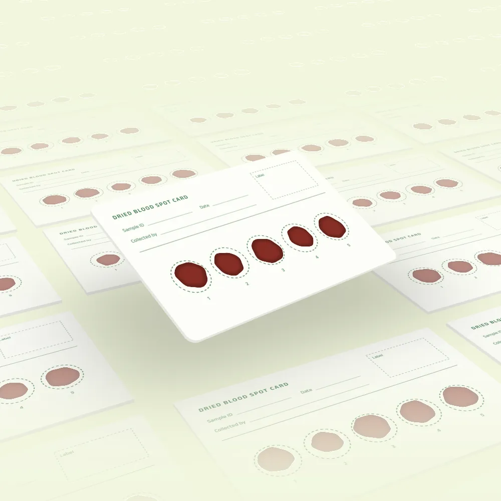
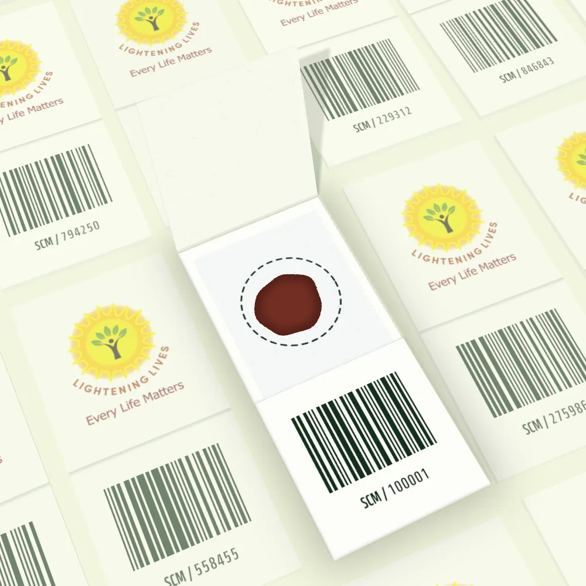
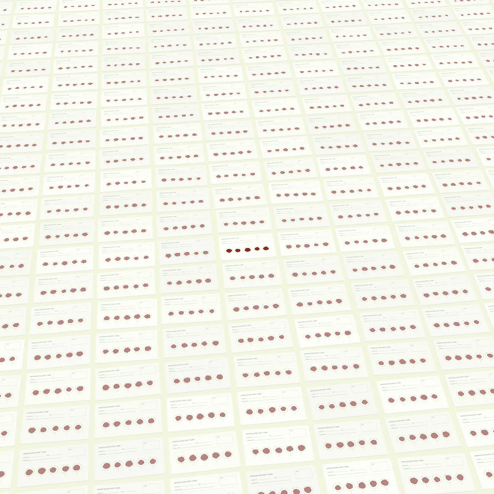
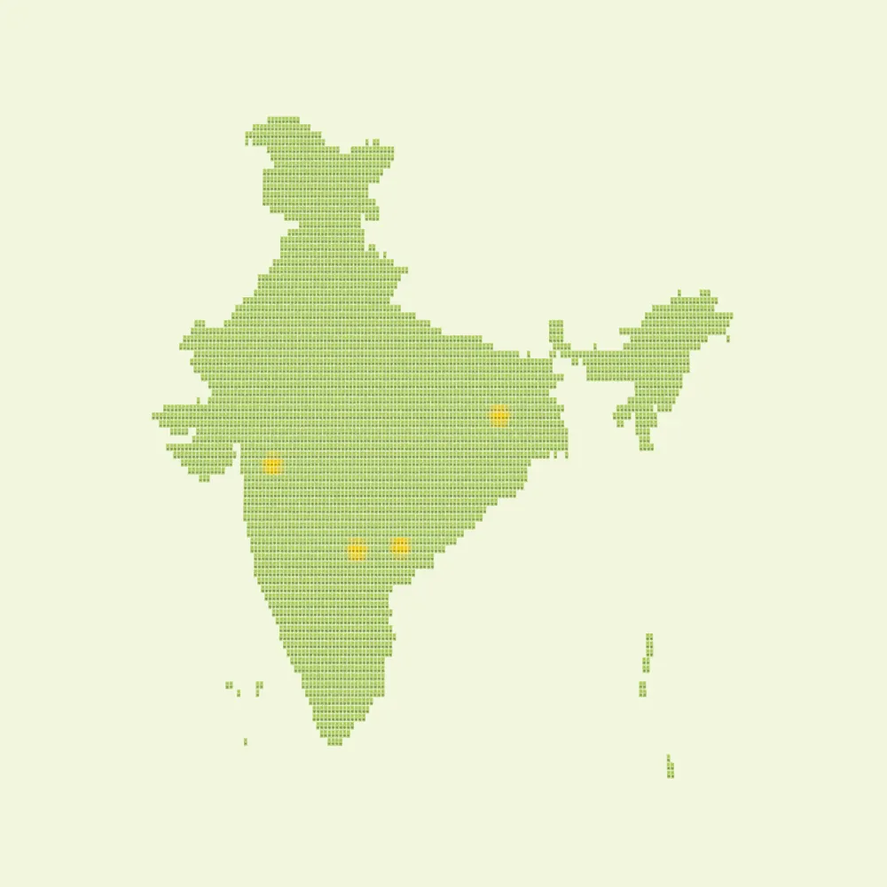

Genetic testing that begins on a card.
Lightening Lives develops REASSURED genetic tests for inherited disorders. Each test starts with a few drops of blood dried on a card, and is designed for the scale of a public health programme.
A healthcare technology company in Hyderabad. We supply institutions and programmes only.
Scroll to follow one sample
A few drops of blood, dried on a card.
That is the whole sample. Collection is simple and minimally invasive, and our tests are designed so that it doesn't call for specialised training.

From card to result without a DNA extraction step.
Our tests are extraction-free and designed to run with minimal laboratory infrastructure. The workflow is automation-friendly and built for high-throughput screening, so results come back quickly.

Built for screening at the scale of a nation.
We have developed tests for Government of India health programmes, including the National Sickle Cell Anaemia Elimination Mission. Our field work includes Nandurbar, Kothagudem and Jharkhand.
See the evidence